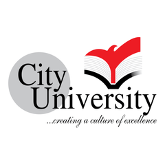

Apparel Professional · AI Learner · Future-Ready Manufacturing Advocate
Resources
Everything that backs up the writing, certifications in progress, results from the floor, and the toolkit behind them.
Credentials
AI capacity-building program · Institute: Idean Consulting · started 19 May 2026
Idean ConsultingVisit website ↗Topics & outcomes
Be AI Fluent
Knitting & Dyeing Department · 2011 (Session 2007–2011, City University, B.Sc. in Textile Engineering)
Completed an 8-week industrial training program focused on knitting, dyeing, quality control, and utility services. Gained practical exposure to textile manufacturing processes, production operations, and industrial best practices within a large-scale composite textile facility.
Academic background
Institute of Business Administration (IBA), University of Dhaka · started 11 July 2025 – ongoing
Currently in the final module, completing the industry internship.
I am completing a Post Graduate Diploma in Garment Business (PGD-GB) at the Institute of Business Administration, University of Dhaka, a specialized, nine-month professional program built to prepare managers capable of leading Bangladesh’s ready-made garment (RMG) sector, the engine of the country’s export economy. Now in the program’s final module, I am undertaking a supervised industry attachment, applying 30 credits of management and RMG-specific training to real operational challenges inside a garment business. The program blends rigorous management education with deep, hands-on exposure to the realities of the garment industry across three structured modules.
A management foundation. The first module grounds students in the functional areas of business: Business Communication, Accounting for Managers, Financial Management, Marketing Management, and Managing People & Organization, establishing the broad-based commercial literacy that underpins sound decision-making in any enterprise.
Industry expertise from those who lead it. The second module is taught directly by prominent national and international RMG leaders and experts through 40 focused sessions. The curriculum covers the full value chain of the garment business: agile leadership and team management; financial budgeting, costing, and profitability analysis; banking, commercial, and customs operations (including L/C and Incoterms); merchandising, product development, and sales; negotiation; human resource and compliance management; production and capacity planning, supply chain management, quality control, and lean management; and forward-looking themes such as digital transformation, Industry 4.0, and sustainability. This module is complemented by a dedicated course in Business Strategy & Innovation, with an emphasis on green innovation and sustainable practice in the RMG industry.
Applied, real-world practice. The final module, which I am currently completing, pairs two applied courses, Managerial Communication for RMG and Business Analytics (covering descriptive, predictive, and prescriptive analysis for data-driven decisions), with a supervised industry attachment. This internship places me inside a garment business enterprise to translate classroom theory into operational know-how across departments, culminating in a formal internship report and defense.
This program has equipped me with a rare combination of management discipline and sector-specific depth, and my ongoing internship is sharpening my ability to contribute across merchandising, operations, commercial, compliance, and strategy functions within the garment and apparel industry.
Internship: “Sustainable and Ethical Sourcing Practices and Their Challenges in the Bangladeshi RMG Industry: A Buying House Perspective”, conducted at LPP S.A. Bangladesh Liaison Office. Supervised by Mohammad Saif Noman Khan, Associate Professor, Institute of Business Administration, University of Dhaka.
Wet Processing Technology (Dyeing) · City University, Bangladesh · 2011

City University, BangladeshVisit website ↗Dr. Abul Hossain Degree College · 2005 · GPA 4.10 out of 5.00